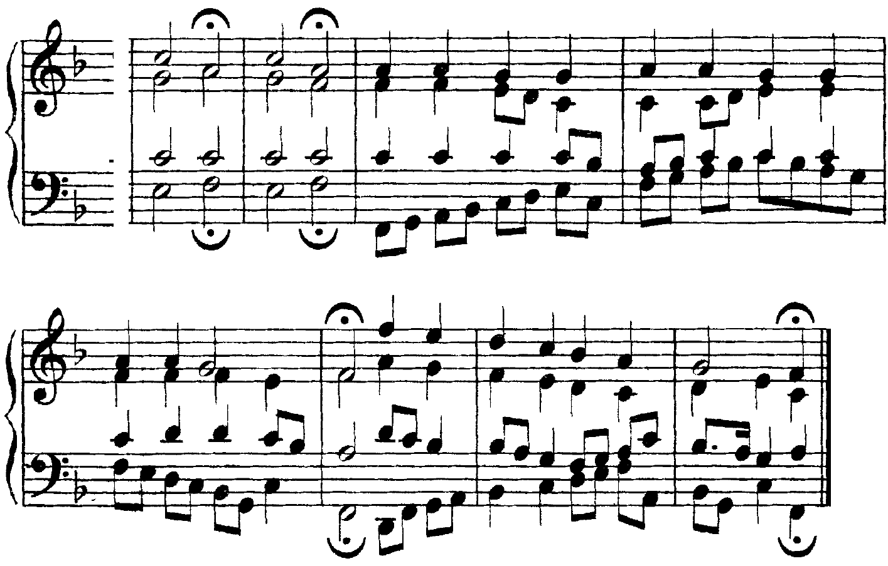
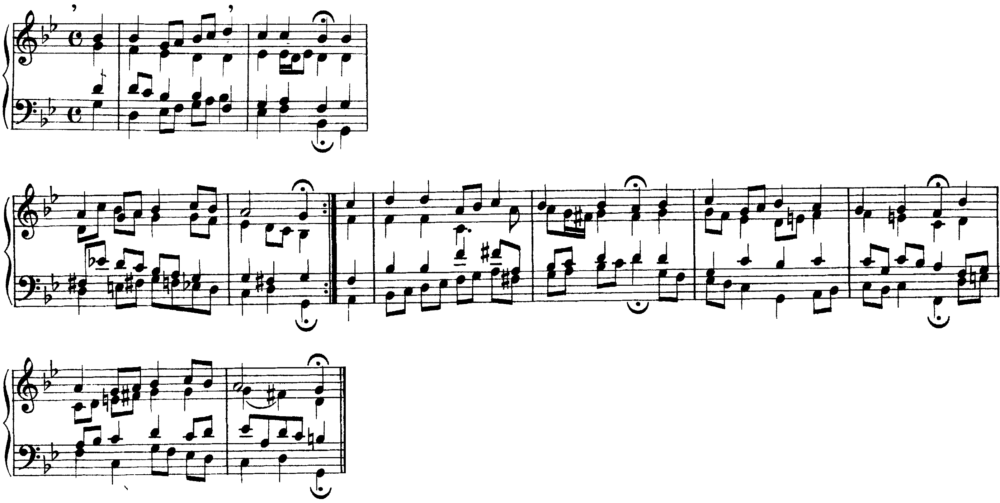
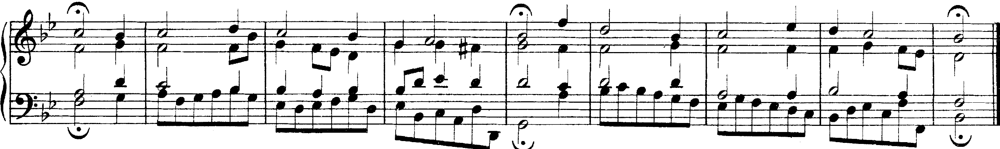

Dettato armonico: la settima di dominante si riconosce dalla voce che scende, il suo stato dal basso; la dominante secondaria dalla nota estranea alla scala, che sale o scende verso l’accordo che segue.
Questa tecnica si definisce tonicizzazione e consiste nell’introduzione di un accordo attraverso la propria dominante o attraverso un accordo che svolga tale funzione, chiamato dominante secondaria.
D. D’Urso, C. Bertolini, Il linguaggio della musica, 3° anno
Lezione di due ore. Seconda ora: Le settime diatoniche: la settima di sopratonica prima della dominante. I compiti per casa sono alla fine.
La settima di dominante e i suoi rivolti, e le dominanti secondarie con la tonicizzazione, sono nel volume del 3° anno (UdA C1 e C3); in questo corso sono le unità 3 e 4.
La settima di dominante ha quattro stati, e il basso li distingue: V⁷, la fondamentale al basso (il V grado); V65, la terza al basso (la sensibile, che sale alla tonica); V43, la quinta al basso (il II grado, che va al I o al I⁶); V42, la settima al basso (il IV grado, che scende sul I⁶: il terzo rivolto «avviene sempre su I⁶»). All’orecchio la settima si riconosce dal tritono fra sensibile e settima, che si chiude sulla risoluzione: la sensibile sale, la settima scende di grado. Quando la settima è in una voce interna si sente meno come intervallo e più come movimento: la voce che scende di semitono sul I.
C. Marenco, Manuale d’armonia, p. 64 (i quattro stati e le cifre) e p. 76.
Nelle otto battute tre dei quattro stati della settima di dominante compaiono ciascuno con il suo basso (il V43 è nel compito per casa). Alla b. 1 il V65 ha il do♯ al basso, che sale al re; la settima, il sol, è nel soprano e scende al fa♯. Alla b. 3 il V42 ha la settima al basso, il sol, che scende al fa♯ del I⁶. Alla b. 7 il V⁷ allo stato fondamentale, dopo il I64, chiude la cadenza. Fra questi punti stanno tre dominanti secondarie, ognuna con la sua nota estranea alla scala di re: il do♮ del V⁷/IV (b. 2, sopra lo stesso re del basso: la tonica diventa la dominante del IV, e il do scende al si), il sol♯ del V65/V (b. 4, al basso, sale al la), il la♯ del V⁷/vi (b. 5, nel tenore, sale al si).
Riconoscere la dominante e dimenticare la settima, perché sta in una voce interna: si scrive V dove c’era V⁷. Il controllo è l’accordo dopo: se una voce scende di semitono (o di tono) sulla terza del I, nell’accordo prima c’era la settima. Il secondo errore è scrivere V65 e V43 allo stesso modo: si guarda il basso, sensibile o II grado.
Una dominante secondaria è la dominante (triade o settima) di un grado della tonalità diverso dalla tonica: «la dominante costruita sul II grado del modo maggiore e minore è la più importante» e «prende il nome di dominante della dominante». La si riconosce dalla nota che non appartiene alla scala: una nota alzata, che è la sensibile del grado di arrivo e sale (il IV grado alzato per il V/V, il V alzato per il V/vi), oppure il VII grado abbassato, che è la settima del V⁷/IV e scende. Non è una modulazione: la frase resta nella sua tonalità e il grado di arrivo diventa «tonica» per un istante.
C. Marenco, Manuale d’armonia, pp. 88–90; D. D’Urso, C. Bertolini, Il linguaggio della musica, 3° anno, UDA C1 (la tonicizzazione).

L’ultima parte del corale; le prime sei battute sono quelle analizzate nell’unità 5. Alla b. 13 il basso canta il mi, sensibile di fa, sotto do, sol e do: è la dominante in primo rivolto, e il mi sale al fa del I. Nelle bb. 15–16 il basso va per crome, con le note di passaggio della lezione 4, mentre sopra si alternano tonica e dominante. La cadenza finale è il punto da ascoltare: alla b. 20 il basso prende il si♮, la nota estranea alla scala di fa, sotto sol, fa e re. È la dominante della dominante con la settima, in primo rivolto (V65/V): il si♮ è la sensibile di do, e sale al do della dominante, che risolve sul I. Il cromatismo sta nel basso, e si sente come una spinta verso l’alto proprio prima della chiusa.
Sentire la nota alzata e scrivere una modulazione. Il V65/V di Bach dura un movimento e torna subito nella tonalità: per una modulazione servono una cadenza nella tonalità nuova e un accordo comune (unità 4). Il secondo errore è attribuire la nota alzata all’accordo sbagliato: la sensibile secondaria si sente meglio nell’accordo che segue, dove arriva.
1. Il basso, cantato a mezza voce durante l’ascolto, poi scritto: prima i salti di quarta e di quinta (le cadenze), poi i gradi congiunti. 2. Le funzioni: sotto ogni accordo T, S o D; le cadenze. 3. Le sigle: dallo stato del basso (V65 sulla sensibile, V42 sul IV che scende), dalla settima che scende, dalla nota cromatica che sale o scende nell’accordo dopo. 4. Il controllo: ogni sensibile, anche secondaria, sale; ogni settima scende; le funzioni sono in ordine (T, S, D, T).
Cominciare dalle sigle e scrivere il basso dopo: la sigla nasce dal basso, e senza il basso lo stato è una supposizione. Il basso si scrive tutto prima della prima sigla; le battute incerte si lasciano vuote e si riprendono al quarto ascolto.
Lo stato dal basso: V grado (V⁷), sensibile (V65), II grado (V43), IV grado che scende (V42, sul I⁶). La settima dalla voce che scende di grado sul I.
Dalla nota estranea alla scala: alzata, sale (V/V, V/vi, V/ii); il VII abbassato, scende (V⁷/IV). Il grado di arrivo è una tonica per un istante, non una modulazione.
Per casa, un basso di dodici battute con le sigle, da realizzare a quattro parti. L’ora si chiude con il solfeggio parlato, cantato e ritmico, in fondo alla pagina. La settimana prossima la V3 (ore 44–45): un basso di sedici battute con ritardi e note di passaggio, e una quinta specie.
Fuori dall’area di dominante la settima non arriva libera: sta nell’accordo precedente, nella stessa voce, e scende di grado. Il ii7 e il ii65, prima della dominante, nel maggiore e nel minore.
Essa richiede non solo la risoluzione discendente, come per gli accordi dell’area di dominante, ma anche la preparazione.
D. D’Urso, C. Bertolini, Il linguaggio della musica, 4° anno, p. 65
Le settime secondarie, 4° anno, unità A7, pp. 64–75 (settima di sopratonica, pp. 64–67).
Il volume del 3° anno usa il ii65 in un corale di J. Crüger (p. 117) ma non tratta le settime a parte: le definizioni sono nel 4° anno, e qui.
Su ogni grado della scala si può costruire un accordo di settima con le sole note della tonalità: sono le settime diatoniche. Quelle che non appartengono all’area di dominante (V7 e settima di sensibile) si chiamano settime secondarie: «in quanto armonie non appartenenti all’area di dominante, vengono definiti settime secondarie» (D’Urso, Bertolini, p. 64). La più usata è la settima di sopratonica, il ii7: nel maggiore re–fa–la–do in do, triade minore e settima minore; nel minore si–re–fa–la in la, triade diminuita e settima minore, la semidiminuita (iiø7).
Piston ne indica l’origine: questi accordi «sono di solito il risultato della scrittura contrappuntistica, soprattutto sotto forma di dissonanze preparate, di ritardi, di appoggiature e nelle progressioni» (Armonia, p. 344). Per questo la settima secondaria conserva la condotta del ritardo: «la nota dissonante deve essere presente nella stessa parte all’interno dell’accordo precedente, analogamente a ciò che accade in un ritardo» (D’Urso, Bertolini, p. 65). Tre tempi: preparazione (la nota è consonante nell’accordo prima), percussione (la stessa nota, tenuta, diventa settima), risoluzione (scende di grado; Piston, p. 346).
| Grado | Nel maggiore (do) | Nel minore (la) |
|---|---|---|
| ii7 | re–fa–la–do: settima minore | si–re–fa–la: semidiminuita (iiø7) |
| IV7 | fa–la–do–mi: settima maggiore | re–fa–la–do: settima minore (iv7) |
| vi7, iii7, I7 | quasi soltanto nelle catene (lezione 4) e nei bassi che scendono per grado (lezione 4, il Preludio BWV 846) | |
Trattare il ii7 come una dominante: la settima che entra per salto, senza essere nell’accordo prima. Nel V7 la settima può arrivare libera; nel ii7 no. Il secondo errore è la preparazione in un’altra voce: la nota c’è nell’accordo precedente, ma nel contralto, e la settima sta nel soprano. Non vale: come nel ritardo, la nota deve restare nella stessa parte.
La settima del ii7 è il 1° grado: si prepara con un accordo che lo contiene, il I, il IV o il vi, e scende al 7° grado nel V. «La terza dell’accordo di ii7, inoltre, prepara la settima del V7»: non è obbligatorio, ma rende «molto fluido il movimento verso il V7»; i profili del soprano «più efficaci» sono 1̂–7̂–1̂ e 4̂–4̂–3̂ (D’Urso, Bertolini, p. 65). Il ii65, con il 4° grado al basso, è «la forma più comune di questo accordo», sempre completo (p. 66): è la sottodominante con la sesta aggiunta, e spesso nasce dal IV sullo stesso basso. Davanti alla quarta e sesta di cadenza la settima non scende subito: resta ferma e diventa la quarta del I64, che poi scende sul V (p. 66; Rimskij-Korsakov, § 39, p. 64).
Il re del tenore attraversa quasi tutto l’esempio: è la nota comune al I, al vi, al IV e al ii7, e per questo è la preparazione naturale della settima di sopratonica. Alla b. 1 è l’ottava del I e la terza del vi; alla b. 2, legato, diventa la settima del ii7 e scende al do♯ del V7. Sopra, il soprano fa il secondo profilo del libro: il sol, terza del ii7, resta e diventa la settima del V7, poi scende al fa♯ (4̂–4̂–3̂). Alle bb. 3–4 il IV e il ii65 stanno sullo stesso sol del basso: il mi entra al soprano, il re resta nel tenore, e l’accordo diventa una settima; la frase si ferma sulla dominante.
Nella seconda frase il basso sale per grado, re–mi–fa♯–sol–la, con il mi di passaggio. Alla b. 6 il ii65 va sulla quarta e sesta e il re del tenore non si muove: è la settima che resta ferma davanti al I64, e scende al do♯ soltanto sul V7 della b. 7. Il V7 risolve sul vi, una cadenza d’inganno, e il re torna a preparare il ii7 della b. 8. La terza frase riprende gli stessi accordi e chiude con ii7 – ii65 – I64 – V7 – I: dentro lo stesso accordo il basso passa dal mi al sol, e la settima resta al suo posto, nel tenore.
Raddoppiare la settima, o farla scendere al do♯ in una voce mentre un’altra porta già il do♯: la sensibile raddoppiata. Con il ii7 davanti al V7 il controllo è sempre lo stesso: la settima del ii scende sulla terza del V, e la voce che aveva la terza del ii resta ferma, o scende anch’essa di grado.
Nel modo minore la settima di sopratonica «presenta una struttura che già conosciamo: è infatti una settima semidiminuita, o settima di terza specie, che deriva da una triade diminuita a cui viene sovrapposta una settima minore». L’accordo «è analogo, nella forma, alla settima di sensibile del modo maggiore, ma è usato con una diversa funzione armonica» (D’Urso, Bertolini, p. 64). Si prepara e si risolve come nel maggiore; il rivolto più frequente è anche qui il iiø65, con il 4° grado al basso.

Il corale, in sol minore, arriva due volte alla tonica con la stessa cadenza. Alla b. 4 il basso porta il do, e sopra suonano sol, mi♭ e la: la–do–mi♭–sol, il iiø7 con il 4° grado al basso. Il sol del tenore c’era già sul quarto tempo della b. 3, nella stessa voce, e scende al fa♯ del V; il la del soprano, che è la fondamentale, resta. Alla b. 10 la cadenza finale ripete l’accordo, con la settima nel contralto (sol, preparato sul tempo prima, poi fa♯), e il corale chiude con la terza maggiore, si♮, sul sol.
Alzare il 6° grado dentro il iiø7 per avvicinarlo alla sensibile: la–do–mi♮–sol in sol minore non è più una semidiminuita. Il mi♭ resta, e scende al re; la sensibile fa♯ entra soltanto nell’accordo di dominante.

Il corale è quello delle note di passaggio del basso (unità 6, lezione 4, bb. 1–8). Nella seconda metà il ii65 torna alle bb. 10 e 15. Alla b. 10 il basso porta il mi♭, il soprano il do, il contralto il sol: do–mi♭–sol–si♭, con il si♭ nel tenore preparato sul tempo prima e risolto sul la. Alla b. 15, la cadenza finale, Bach scrive per intero il movimento del libro: I – I6 – ii65 – ii7 – V – V7 – I. Il si♭ del tenore resta fermo per due tempi, da ottava della tonica a settima del ii, mentre il basso scende mi♭–do, e cade sul la della dominante. Alla b. 11 compare un’altra settima, la–do–mi♭–sol: la stessa struttura del iiø7, che qui va verso il re maggiore. È la semidiminuita della lezione 2.
Realizza il basso a quattro parti.
Settime su ogni grado, con le note della tonalità. Fuori dall’area di dominante si chiamano secondarie: la più usata è il ii7, semidiminuita nel minore.
La settima è nell’accordo prima, nella stessa voce; scende di grado. Davanti al I64 resta ferma. Il ii65 è la forma più comune, sempre completa.
Per casa, un basso numerato di dodici battute. L’ora si chiude con il solfeggio parlato, cantato e ritmico, in fondo alla pagina. Lezione 2: la settima di sensibile, che non si prepara.
Compiti per la prossima volta
Realizza il basso a quattro parti.
Su due righi, due voci per rigo con i gambi opposti.
Sul quaderno, a matita. La foto del lavoro finito va su Classroom. Nel Workbook: apri l’esercizio 7.1 ↗
Compiti per la prossima volta
n. 467 e n. 468 parlato · n. 469 endecalineo · n. 470 e n. 471 cantato · n. 472 e n. 473 ritmico
Ogni pezzo a tempo, senza fermarti: il parlato a nomi, il cantato prendendo il primo suono dalla tastiera, il ritmico battendo la pulsazione.
Scrivi la linea del basso sul quaderno, in chiave di basso: otto battute in 9/8, la minore. Il primo suono è la. Prima il riferimento, poi tutto due volte, ogni coppia di battute due volte, il collegamento 1–4, 3–6 e 5–8, e tutto per controllare.
Il riferimento: accordo di tonica e primo suono
Il dettato · otto battute
Le sezioni (riferimento, tutto, le coppie, il collegamento) si ascoltano una per una e si ripetono quanto serve; le fasi fanno la procedura della classe, con gli annunci e le pause, da qualunque punto.
Sul quaderno scrivi in testa la sigla C3-D-U07-L1. Si corregge all’inizio della prossima lezione.
Compiti per la prossima volta
Scrivi un contrappunto di quarta specie (la sincope) sopra il canto fermo, in modo eolio (finale la): otto battute. Comincia su una consonanza perfetta, alla cadenza la sensibile sale alla finale, niente quinte e ottave consecutive.
Sul quaderno, con la sigla C3-CP-U07-L1 in testa; la foto va su Classroom.
Realizza a quattro parti il basso senza numeri: otto battute in 4/4, la maggiore. Trova tu l’accordo di ogni nota (la regola dell’ottava è il punto di partenza) e scrivilo sotto; poi il soprano, poi le voci interne. Accordi che puoi usare: anche ii, vi (e iii), con i rivolti già studiati.
Sul quaderno, con la sigla C3-BD-U07-L1 in testa; la foto va su Classroom.
Armonizza a quattro parti il canto dato: otto battute in 4/4, mi minore. Prima le cadenze, poi il basso per intero, e solo alla fine contralto e tenore. Accordi che puoi usare: anche ii, vi (e iii), con i rivolti già studiati.
Sul quaderno, con la sigla C3-CD-U07-L1 in testa; la foto va su Classroom.
Scritto: Un basso numerato di dodici battute (Workbook, esercizio 7.1), sul quaderno; la foto va su Classroom. Solfeggio dal quaderno di lettura: parlato n. 467, 468; endecalineo n. 469; cantato n. 470, 471; ritmico n. 472, 473 (a tempo, senza fermarsi). Dettato C3-D-U07-L1 dalla pagina della lezione (sezioni da ascoltare, o le fasi della procedura guidata), sul quaderno con la sigla. Contrappunto di quarta specie sul canto fermo (C3-CP-U07-L1). Basso senza numeri da realizzare a quattro parti (C3-BD-U07-L1). Canto dato da armonizzare a quattro parti (C3-CD-U07-L1).
In classe
A nomi, a tempo, con la mano che batte. Chi si ferma riparte dalla battuta dopo.
Apri il n. 462 nel quaderno di lettura ↗ chiave di contralto · 4/4 · do maggiore
In classe
A nomi, a tempo, sul doppio rigo: prima si trovano con gli occhi i passaggi da una chiave all’altra.
In classe
Si prende il tono dalla tastiera, si canta insieme; poi a gruppi.
Apri il n. 464 nel quaderno di lettura ↗ chiave di violino · 3/4 · la minore
Apri il n. 465 nel quaderno di lettura ↗ chiave di violino · 4/4 · si♭ maggiore
In classe
Tutti insieme, battendo la pulsazione. Poi a file, due battute a testa.